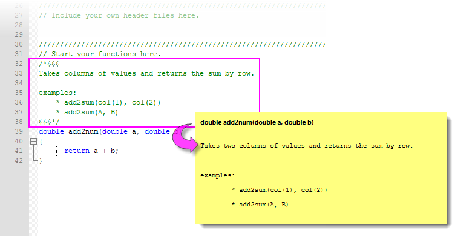

Eine benutzerdefinierte Funktion für den Dialog Werte setzen erstellen
Wks-SetColVal-UserDefFunc
Einführung
Dieses Thema beschreibt, wie eine Origin-C-Funktion geschrieben wird, so dass sie im Menü Funktion des Dialogs Werte setzen aufgeführt wird.
Allgemeine Informationen zum Hinzufügen Ihrer eigenen OC-Funktionen zu Origin finden Sie im Thema: OC-Funktionen von LabTalk aus aufrufen.
Damit auf OC-Funktionen vom Dialog Werte setzen aus zugegriffen werden kann, müssen folgende zusätzliche Bedingungen erfüllt werden:
- Der Rückgabetyp der Funktion kann nicht void sein.
- Die Funktion sollte keine Referenz oder Zeiger als Variablentyp haben.
Sobald die Funktion kompiliert ist, wird sie im Auswahlmenü Funktion des Dialogs Werte setzen verfügbar.
Unterstützen von Numerischen Typen & Zeichenkettentypen mit Daten in Spalten
Zeichenkette
Das Folgende ist ein Beispiel für eine Zeichenkettenfunktion:
string AddSomethingToStr(string str) { str += " test"; return str; }
Sobald sie kompiliert ist, könnte diese Funktion dann im Dialog Werte setzen wie unten verwendet werden:
Col(B) = AddSomethingToStr(Col(A))$;
Numerisch
Das Folgende ist ein Beispiel einer Funktion, die eine ganze Zahl zurückgibt:
int CopyNumeric(int nn) { return nn; }
Auf die Funktion kann dann vom Dialog Werte setzen aus zugegriffen werden, um numerische Daten aus einer Spalte in eine andere zu kopieren:
Col(B) = CopyNumeric(Col(A));
Steuern des Zugriffs auf OC-Funktionen von LabTalk aus
Fügen Sie eine der folgenden #pragma-Anweisungen in Ihre OC-Quelldatei ein, um den Zugriff auf Ihre OC-Funktionen von LabTalk aus zu deaktivieren, erlauben oder zu begrenzen.
- #pragma labtalk(0) // disable running OC functions in LabTalk
- #pragma labtalk(1) // default, allow calling OC functions in LabTalk
- #pragma labtalk(2) // run OC functions by run -oc
Da das Standardverhalten von Origin darin besteht, das Aufrufen von OC-Funktionen von LabTalk aus zu erlauben, wird #pragma labtalk(1) in Ihrem OC-Code nicht wirklich gebraucht. Beachten Sie, dass #pragma labtalk(...) bis zum nächsten #pragma labtalk(...) Einfluss auf alle Funktionen in dieser Datei hat. Daher können Sie, wenn Sie keine C-Funktionen in das Menü Funktion eingeben möchten, #pragma labtalk(0) vor der Funktion verwenden. Und Sie können #pragma labtalk(1) wieder eingeben, um die Eingabe von Funktionen in das Menü Funktion wieder aufzunehmen. Durch Verwenden dieser Methode können Sie die Funktionsnamen im Menü Funktionen festlegen und verwalten.
Kategorie für die Funktion im Menü Funktion festlegen
Damit Ihre OC-Funktionen im Menü Funktion unter einer geeigneten Kategorie erscheinen, sollten Sie eine Pragma-Aussage wie unten hinzufügen:
- #pragma labtalk(1, Date and Time) // set category name to Date and Time
Die Funktion(en) wird/werden dann im Menü Funktion von Werte setzen wie unten angezeigt, wobei das Beispiel hier eine Funktion darstellt, die eine Zeichenkette akzeptiert und zurückgibt:
Date and Time: FunctionName(str)$
Wenn keine Kategorie für Ihre OC-Funktion festgelegt ist, wird die Funktion unter der Kategorie User Origin C gezeigt.
 |
Die Auswahl einer Standardfunktion im Menü Funktion zeigt einen "intelligenten Hinweis" mit grundlegenden Informationen zur Funktion (Prototyp, was wird ausgegeben etc.). Sie können solche Hinweise zu Ihren Origin-C-Funktionen hinzufügen (Tutorial unten), indem Sie Kommentare zwischen /*$$$ und $$$*/ einfügen, wie gezeigt:
- 
|
Tutorial
Im Folgenden wird eine Vorgehensweise zum Hinzufügen einer benutzerdefinierten Funktion im Menü Funktion des Dialogs Werte setzen dargestellt. Außerdem befinden sich in internal.c im Unterordner \OriginC\System\ Ihres Programmverzeichnisses von Origin die entsprechenden Beispielcodes.
Schritte:
- [CodeBuilder öffnen]: Wählen Sie im Menü Ansicht: Code Builder, um den Code Builder zu öffnen.
- [Dateiname eingeben]: Wählen Sie im Menü des Code Builders Datei: Neu. Das Dialogfeld Neue Datei wird geöffnet. Wählen Sie C File als Dateityp im Dialogfeld Neue Datei und geben Sie test im Feld des Dateinamens ein (Die Erweiterung ".c" wird automatisch hinzugefügt.) Beachten Sie, dass der Standardspeicherort der <Anwenderdateiordner>\OriginC\ ist. Klicken Sie auf OK. Der Dialog wird geschlossen und das Fenster "test.c" im Bearbeitungsfeld angezeigt.
- [Code eingeben]: Geben Sie den folgenden Origin C-Code unten in diesem Bearbeitungsfeld ein:
#pragma labtalk(1,Math) double add2num(double a, double b) { return a + b; }
|
Hinweis: Die Zeile "pragma" vor der Funktionsdefinition ist dazu da, die Funktion in der Kategorie Math im Menü Funktion zu setzen.
|
- [Erstellen]: Wählen Sie im Menü des Code Builders Erstellen: Erstellen, um den Code zu kompilieren. Stellen Sie sicher, dass keine Fehler auftreten. Wenn der Code erfolgreich kompiliert wird, schließen Sie den Code Builder, um zum Hauptfenster von Origin zurückzukehren. Wenn ein Fehler auftritt, korrigieren Sie ihn und kompilieren Sie erneut.
- [Dialog Werte setzen öffnen]: Gehen Sie zurück zum Origin-Arbeitsbereich. Öffnen Sie eine neue Arbeitsmappe. Wählen Sie Spalte: Neue Spalte hinzufügen im Origin-Menü, um dem Arbeitsblatt in dieser Arbeitsmappe eine dritte Spalte hinzuzufügen. Füllen Sie die ersten beiden Spalten mit beliebigen Zahlen. Markieren Sie die zweite Spalte durch Klicken auf ihren Spaltenheader und wählen Sie Spalte: Spaltenwerte errechnen, um den Dialog Werte setzen zu öffnen.
-
[Die neue Funktion aus dem Menü Funktion eingeben]: Klicken Sie im Dialog auf das Menü F(x). Unter der Kategorie Math können Sie den Eintrag add2num(d1, d2) sehen. Wählen Sie die Funktion, indem Sie auf sie klicken. Der Text "add2num(a,b)" wird in das Textfeld der Spaltenformel eingefügt. Bearbeiten und modifizieren Sie den eingefügten Text:
add2num(col(1),col(2))
- [Werte setzen ausführen]: Klicken Sie auf OK, und die Summe der ersten und zweiten Spalte werden in jeder Zeile in der zweiten Spalte als Ergebnis angezeigt.
|
Hinweis: Obwohl diese Funktion "add2num" zwei (doppelte) Skalarargumente hat und einen Skalarwert zurückgibt, werden die Ergebnisse in die Zielspalte gefüllt, weil der Dialog Werte setzen die Formel auf jedes Element (implizit durch i indiziert) automatisch anwendet, wenn Sie diese Funktion im Dialog Werte setzen mit zwei Spalten (d.h. Vektoren) als Argumente ausführen.
|